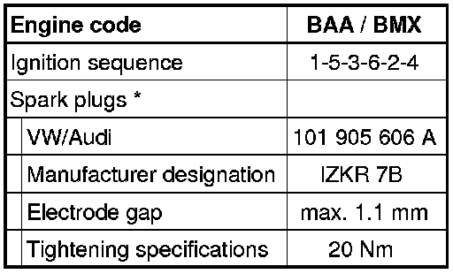

LEMON Manuals
: Even more car manuals for everyone: 1960-2025
Home
>>
Volkswagen
>>
2004
>>
Touareg (7LA) V6-3.2L (BAA)
>>
Repair and Diagnosis
>>
Powertrain Management
>>
Ignition System
>>
Application and ID
Ignition System: Application and ID
Spark Plug
Technical Data

*
Use
Spark plug
removal tool (3122B) to remove or install spark plugs